Nyzo version 617 (commit on GitHub) adds a client command for querying the status of a verifier.
This version affects the client only.
In CommandEndpointWeb, some simple error reporting was added.
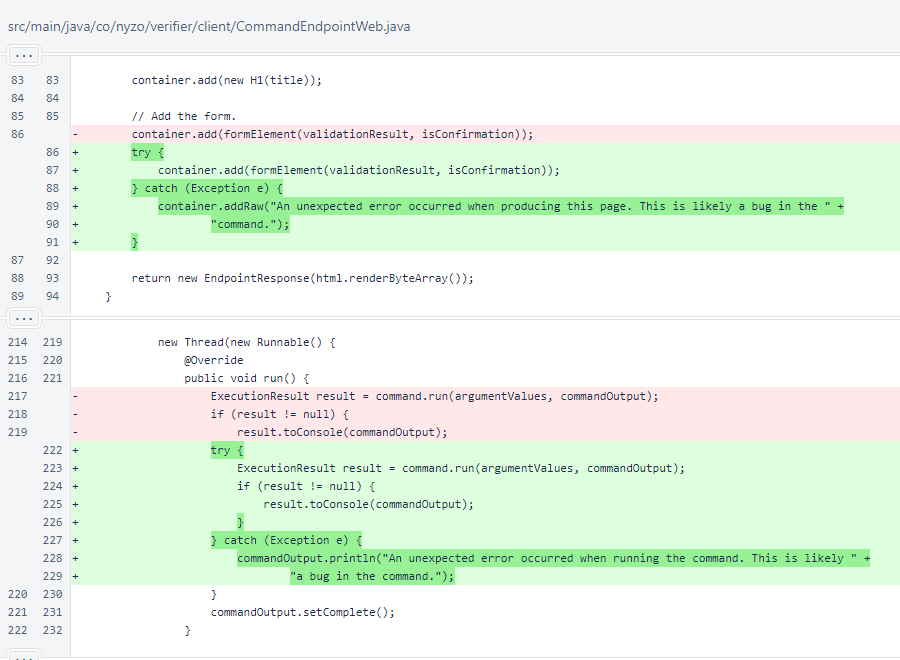The new VerifierStatusCommand was added to the list of commands in CommandManager.
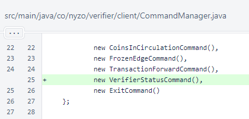The VerifierStatusCommand class implements all of the required methods of the Command interface. The IP address is required, and the port is optional.
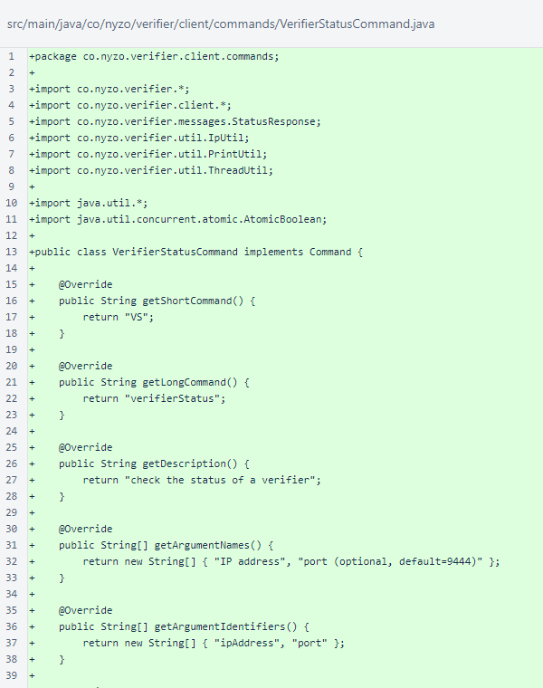The command requires validation of the IP address. It does not require confirmation, as running it incorrectly would not have significant consequences. It is long-running.
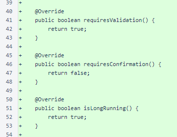The VerifierStatusCommand.validate() method ensures that a valid IP address is provided.
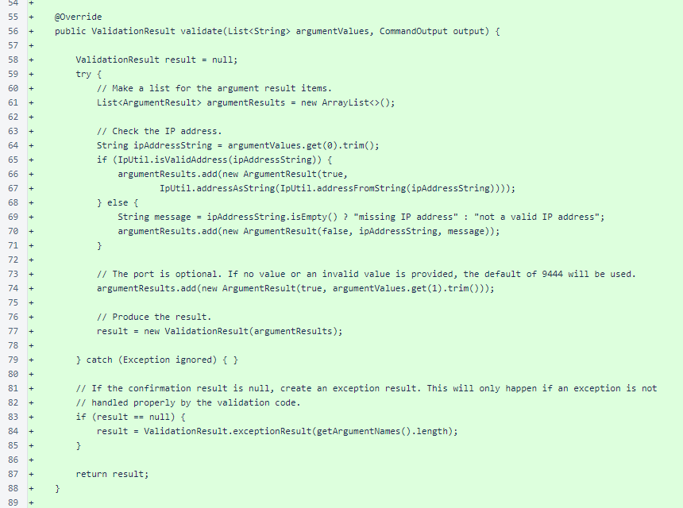The command sends a StatusRequest17 message to the specified IP on the specified port, defaulting to port 9444. The response is displayed.
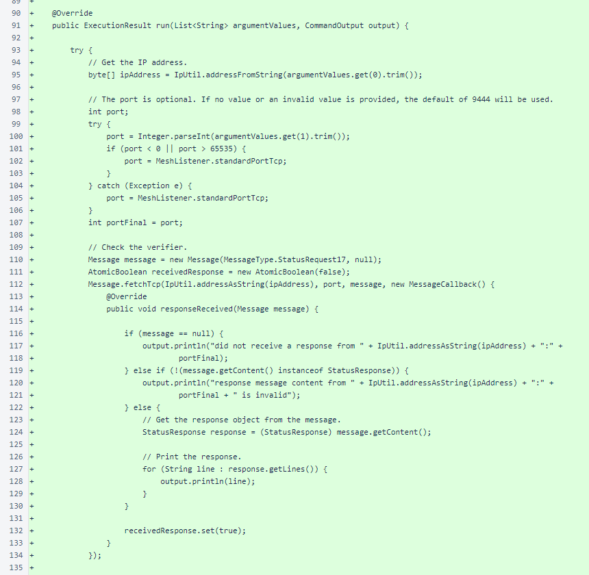The command waits for the response to return. It returns a null result, like all other long-running commands.
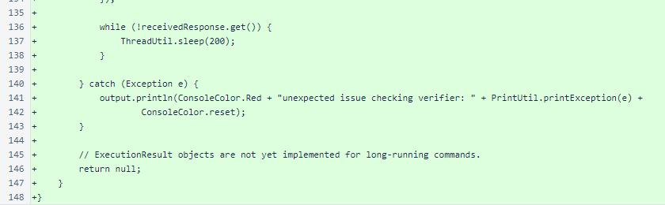The IpUtilTest class was added to test the new IpUtil.isValidAddress() method.
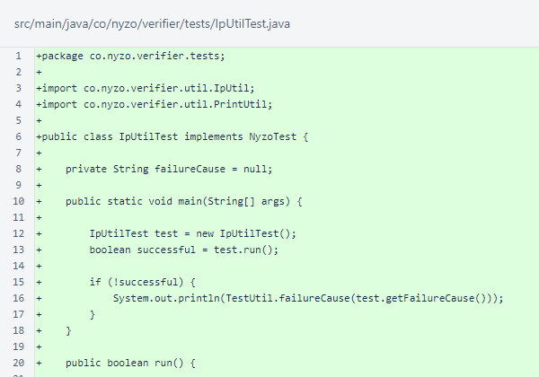Several cases are tested to ensure the method produces expected results.
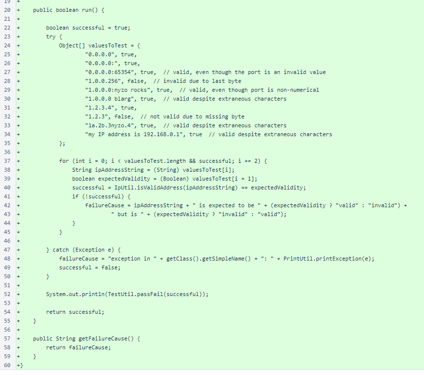IpUtilTest was added to TestUtil.
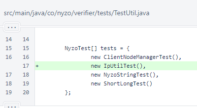Some unused imports were removed from IpUtil.
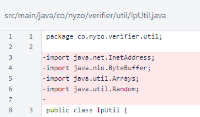The IpUtil.isValidAddress() method uses the same basic structure as the IpUtil.addressFromString() method. It is worth noting that the IpUtil.addressFromString() method will produce results for many inputs that return false from the IpUtil.isValidAddress() method.
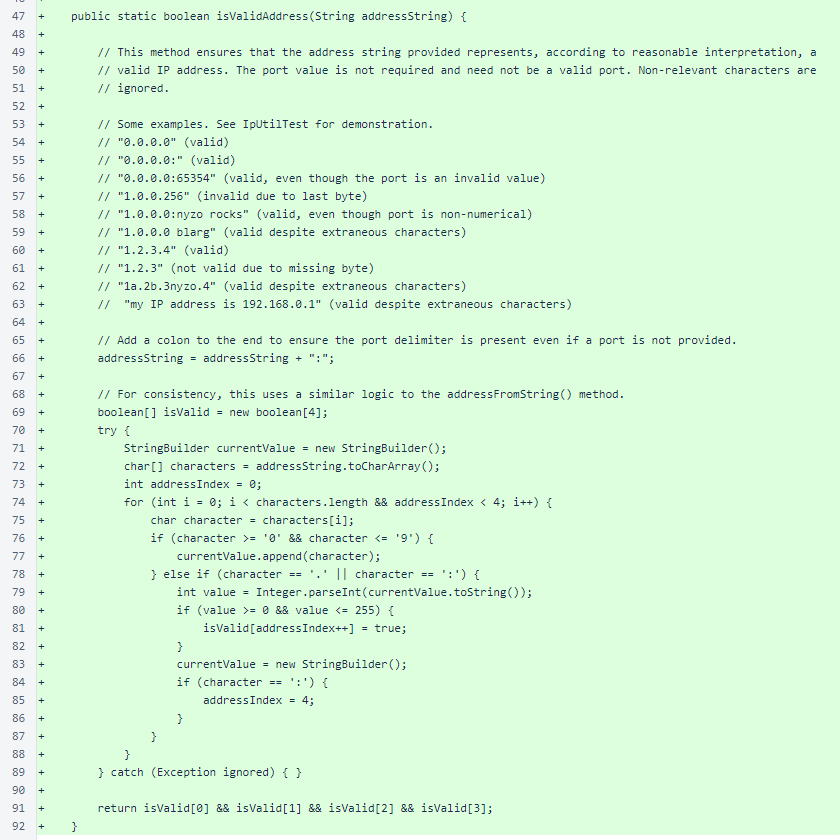The VerifierStatusCommand works for both in-cycle and out-of-cycle verifiers. This is the command's result for an out-of-cycle verifier we are running for testing, 🛸Argo 761🛸.
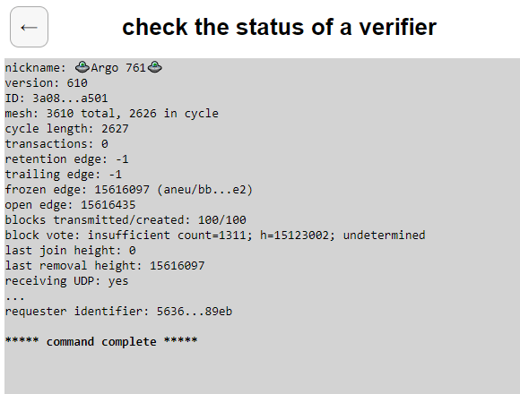This is the command's result for one of our in-cycle verifiers, 😱😱 killr 😱😱.
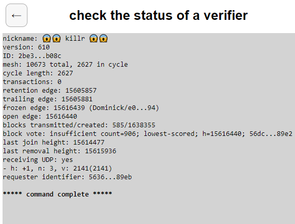